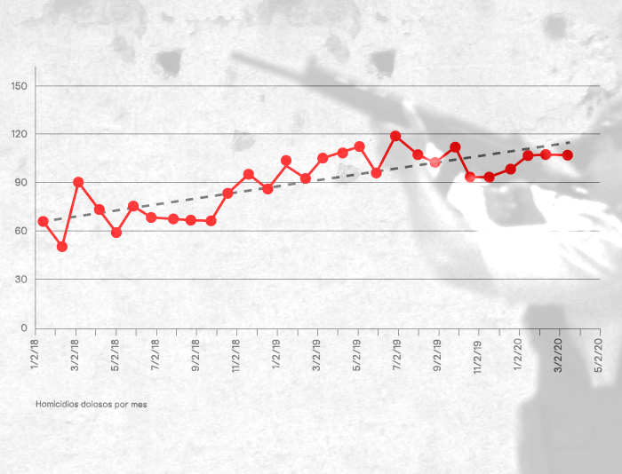
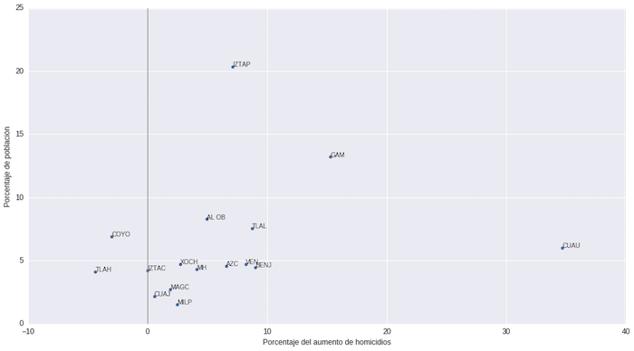
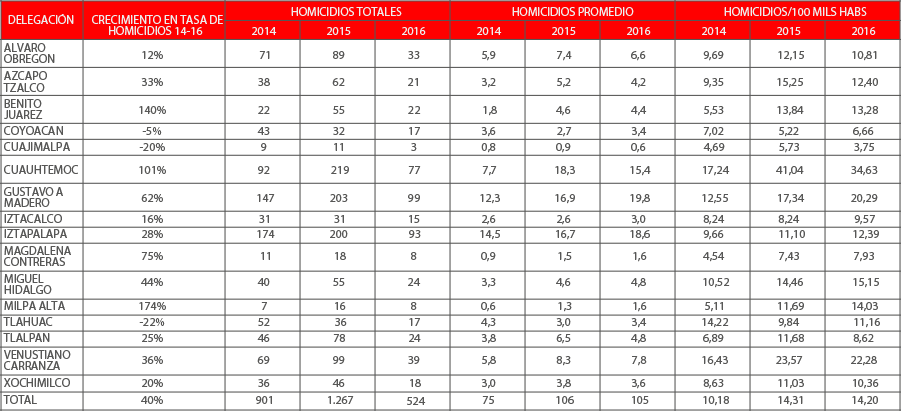
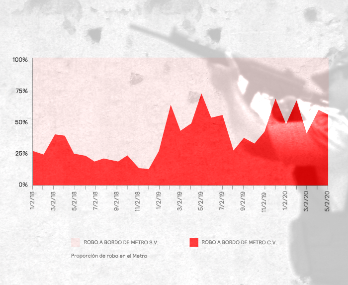

El crimen en la CDMX: Se reducen los delitos, pero aumenta la violencia
Una investigación del Laboratorio de Datos de FOROtv y OPI, Inteligencia Participativa
La inseguridad en la Ciudad de México se ha vuelto un problema que preocupa cada vez más a la población. Los medios de comunicación y las redes sociales también han incrementado su atención a los casos específicos de violencia que se presentan en la Ciudad. Sin embargo, el gobierno capitalino sostiene que el crimen ha disminuido y que las historias son casos aislados.
La Encuesta Nacional de Victimización y Percepción sobre Seguridad Pública que acaba de ser publicada por el INEGI presenta un cuadro de deterioro en la percepción de inseguridad. La Ciudad de México ocupa la sexta posición de 32 ciudades: con un 76.4% de la población que se siente inseguro en su municipio comparado a 61.8% en 2013.
La contraposición entre la percepción ciudadana y la posición del gobierno nos obliga a preguntar ¿qué está sucediendo realmente en la Ciudad de México? El análisis que se realizó a partir de las bases de datos oficiales nos permitió concluir que aun cuando los delitos han disminuido, la CDMX ha sufrido un proceso de violentización. Además, el crimen se ha trasladado a zonas más visibles y que antes presentaban tasas delictivas muy por debajo del promedio de la ciudad. El ambiente de inseguridad que se ha registrado desde hace años en otras regiones del país ya es parte de la vida de un sector de la sociedad capitalina.
 (Photo by Susana Gonzalez/Getty Images)
(Photo by Susana Gonzalez/Getty Images)
Se reducen los delitos
Los delitos de alto impacto definidos por el Secretariado Ejecutivo del Sistema Nacional de Seguridad Pública (SESNSP), tales como homicidios dolosos, secuestros, extorsiones y robos de alto impacto social del fuero común con y sin violencia (robos a casa habitación, a negocio, a transeúntes, a transportistas, de vehículos y a instituciones bancarias), han disminuido en un 5% año con año, ubicándose como la decimocuarta entidad con mejor desempeño.
Evolución de los crímenes de alto impacto de acuerdo al SESNSPLos datos presentados, respuesta a la solicitud de información 0109000275416 y publicada el 28/06/2016 que se encuentra disponible en hoyodelcrimen.com, señalan una tendencia a la baja de los delitos reportados por la SSPDF. Entre enero de 2014 y mayo de 2016 los delitos mensuales bajaron de 3 mil 313 a 2 mil 345; estos bajaron de un promedio mensual en 2014 de 3 mil 026 delitos al mes a 2 mil 718 en 2015 y 2 mil 2381 en 2016; una disminución año con año de 11%.
Crímenes totales registrados en CDMXEs importante señalar que los datos publicados por la SESNSP y la SSPDF no son consistentes. Aunque ambos presentan la misma tendencia, en varios casos se encuentran discrepancias para los mismos registros. Por el nivel de especificidad (mayor detalle), decidimos realizar el análisis con base en los datos proporcionados por la SSPDF como respuesta a la petición de información mencionada anteriormente.
Si el crimen ha disminuido, ¿por qué los ciudadanos perciben que ha aumentado? Nuestra primera conclusión es que la CDMX se ha vuelto un lugar mucho más violento en los últimos dos años como resultado del incremento dramático en el número de homicidios dolosos y la violentización de los crímenes habituales.
 (Photo by John Moore/Getty Images)
(Photo by John Moore/Getty Images)
Suben los homicidios
El homicidio doloso es el homicidio qué más lastima a la sociedad. De enero de 2014 a la mayo 2016 estos han incrementado de manera significativa en la CDMX. Como se puede apreciar en la gráfica, los homicidios dolosos en CDMX aumentaron de 71 en enero de 2014 a 110 a mayo de 2016. El principal crecimiento en homicidios se dio entre 2014 y 2015, en lo que va del 2016 se ha mantenido en niveles similares a los de 2015.
 Homicidios dolosos por mesEn todo el 2014, se presentaron 901 casos de homicidio doloso en la CDMX —un promedio de 75 al mes—; en 2015 fueron mil 267 —un promedio de 106 al mes—; y de enero a mayo 2016 se han presentado 524 homicidios —un promedio de 105 al mes. Esto representa un crecimiento de 18% año con año en los homicidios promedio por mes.
En 13 de 16 delegaciones, los homicidios en 2015 aumentaron respecto a 2014. Sin embargo, este se concentra de manera desproporcionada en la Cuauhtémoc y la Benito Juárez. En estas dos delegaciones, en las que habita sólo el 11% de la población de la CDMX, se concentró el 44% de los homicidios incrementales entre 2014 y 2015.
 Relación de proporción de homicidios incrementales con poblaciónLa gráfica anterior presenta la relación de la cuota de aumento entre 2014 y 2015 en términos porcentuales con el porcentaje de población en cada Delegación. Esto permite identificar de manera visual las delegaciones que están “sobrerrepresentadas” en términos del incremento en homicidios en el periodo seleccionado. El punto a la extrema derecha, correspondiente a la delegación Cuauhtémoc, es el más notable ya que representa 35% del aumento en homicidios, es decir 127 sobre el total de 366, mientras que concentra únicamente el 6% de la población. Por su parte, los puntos correspondientes a las Delegaciones Benito Juárez y Venustiano Carranza tienen el 9% y 8% de los homicidios incrementales respectivamente, mientras que sus poblaciones son el 4% y 5% del total de la CDMX.
 (Photo by Spencer Platt/Getty Images)
(Photo by Spencer Platt/Getty Images)
De 2014 a 2016, la tasa de homicidios por cada 100 mil habitantes subió de manera agregada en la CDMX en un 40% pansando de 10.15 a 14.24. Las delegaciones donde más se incrementó fueron:
- Milpa Alta (172%)
- Benito Juárez (141%)
- Cuauhtémoc (102%)
Crecimiento de la tasa de homicidios por 100 mil habitantes del 2014 a 2016. El color rojo indica mayor crecimiento  Resumen de homicidios dolosos por delegación
El crimen se hace más violento
Otra evidencia de la violentización del crimen en CDMX es la nueva dinámica de robo en los medios de transporte. Por ejemplo, en el STC Metro los robos totales se han mantenido estables respecto a su frecuencia.
Robo total a borde de metro de 2014 a 2016Sin embargo, el robo en el Metro se ha vuelto significativamente más violento. Anteriormente, tres cuartas partes de los robos eran reportados como sin violencia, hoy en día más de la mitad son reportados como violentos.
 Proporción de robo violento en el MetroLa proporción de robo con violencia respecto a la del robo sin violencia en el Metro pasó de 26% contra 74% en enero de 2014 a 55% contra 45% en mayo de 2016.
El crimen se traslada a zonas que antes eran seguras
A partir de los resultados obtenidos anteriormente y del hallazgo del incremento de homicidios, analizamos a detalle donde están sucediendo los homicidios en la Ciudad de México. Para esto, analizamos las tendencia y niveles absolutos a nivel sector tales como son definidos por la Secretaría de Seguridad Pública del Distrito Federal. Esto nos permitió identificar que los sectores que presentan el mayor crecimiento en la tasa de homicidios son, en su gran mayoría, aquellos que antes eran relativamente seguros y que se encuentran principalmente en la Cuauhtémoc y la Benito Juárez.
Relación de tasa de homicidios por 100 mil habitantes con incremento en tas a de 2014 a últimos tasa junio 2015 a mayo 2016Esta gráfica presenta todos los sectores de la CDMX y permite apreciar el aumento de homicidios entre 2014 y 2015 contra la tasa de homicidios por cien mil habitantes en 2014.
La pendiente descendiente (se utilizó una regresión logarítmica) de la curva nos permite apreciar cómo los sectores que han sufrido un incremento más elevado son aquellos que estaban por debajo del promedio en 2014. Estos son los 12 sectores que presentaron el mayor incremento entre 2014 y 2015:
Coloca el puntero sobre un sector de la CDMX para conocer el incremento local en la tasa de homicidos por cada 100 mil habitantes entre 2014 y 2015
Como se puede observar en la tabla y en el mapa, el incremento se ha concentrado en sectores del centro de la Ciudad de México. Los cuatro sectores que presentan mayor crecimiento son:
- Revolución — Alameda
- Del Valle
- Roma (cabe señalar que de enero 2016 a mayo 2016 no se han presentado casos de homicidios en este sector)
- Narvarte — Álamos
Estos cuatro sectores se encuentran en las Delegaciones Benito Juárez o Cuauhtémoc y, al estar ubicados en la zona centro de la Ciudad, concentran gran parte de la actividad económica y comercial. Además, estos sectores son altamente visibles y significativos para la vida en la Ciudad de México lo cual tiene aún mayor efecto sobre la percepción de inseguridad de la ciudadanía. Los sectores Revolución Alameda y Corredor Centro concentran más del 25% de puntos de interés y museos en CDMX.
 La familia de Rubén Espinosa lamenta su muerte tras el multihomicidio que sucedió en la colonia Narvarte en el año 2015. (AP Photo/Marco Ugarte)
(AP Photo/Marco Ugarte)
La familia de Rubén Espinosa lamenta su muerte tras el multihomicidio que sucedió en la colonia Narvarte en el año 2015. (AP Photo/Marco Ugarte)
(AP Photo/Marco Ugarte)
En conclusión
El incremento en los homicidios y la violentización del robo hacen que la ciudadanía viva en un ambiente más violento e inseguro y esto se traduce en una creciente percepción de inseguridad como lo demuestran las cifras publicadas por el INEGI.
Lugares muy representativos y con gran actividad y afluencia como son la Del Valle y Narvarte, el sector Roma que incluye la Condesa y la Roma, y la zona Centro de la Ciudad se han tornado mucho más inseguras y violentas. Para ciertos sectores de la sociedad que quizá anteriormente vivían alejados del crimen, esta nueva realidad los hace sentir que la situación de seguridad se ha deteriorado enormemente.
En este mapa se puede comparar el número de veces que diversos delitos del fuero común se cometieron durante los meses comprendidos entre enero de 2014 y mayo de 2016. Selecciona el delito y la fecha y, después, coloca el puntero sobre un sector para conocer el número de veces que el crimen fue cometido en ese mes.
Por último, cabe señalar que intentamos replicar este análisis para el Estado de México con el objetivo de poder contar con un panorama completo de la criminalidad en el Valle de México, pero los datos no estaban disponibles más que a través del Secretariado Ejecutivo y no presentaban el nivel de desagregación requerido.
Las fuentes de información que usamos y consultamos para el análisis fueron:
- Los datos de delitos del fuero común publicados por el Secretariado Ejecutivos de la Seguridad Pública
- Solicitud de información: http://www.infomexdf.org.mx/ folio 0109000275416
- Los datos de información delictiva de una solicitud de información a la SSPDF y que se encuentran publicados por Diego Valle Jones en http://hoyodecrimen.com/
- Las proyecciones poblacionales de CONAPO
- El Directorio Estadístico Nacional de Unidades Económicas de INEGI
- Encuesta Nacional de Victimización y Percepción sobre Seguridad Pública 2016
Análisis de datos por Jerónimo Carvajal, Jorge Andrés Castañeda y Alejandro Maza Ayala. OPI